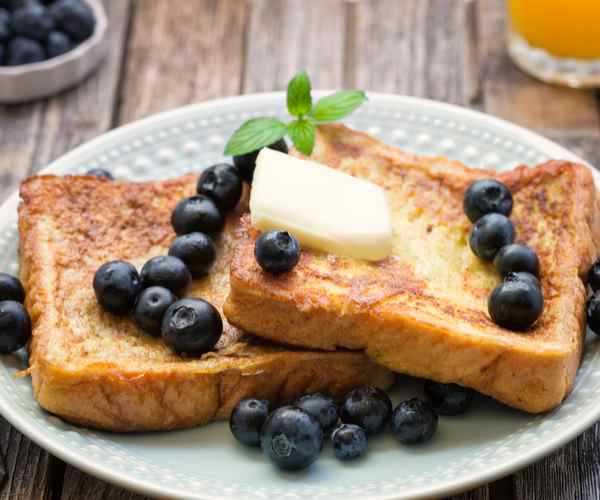

Lemon-Vanilla French Toast

Description
Decadent? Yes! Sweet? Yes! Tasty? Yes! I just whipped this up this morning. I love things lemon, and it has to be sweet. None of that tartness, no thank you. This is something fun to make Sunday morning. Some kids may not like the lemon flavoring, but the sweetness may be an attraction.
Ingredients
- 1/3 cup hal-and-hal
- 5 large egg whites
- 2 tablespoons confectioners' sugar
- 2 tablespoons brown sugar
- 1/4 teaspoon vanilla extract
- 1/4 teaspoon lemon extract
- 1/4 teaspoon salt
- 2 tablespoons unsalted butter, or more as needed
- 6 slices bread(I like texas toast)
- 1/2 cup maple syrup, or to taste
- Optional: Fresh blueberries
Directions
- Combine half-and-half, egg whites, confectioners' sugar, brown sugar, vanilla, lemon extract, and salt in a bowl; whip together with a whisk or electric whisk until well blended, about 30 seconds. Pour mixture into a large, flat container.
- Put one bread slice in the container and flip so it is coated on both sides, almost saturated.
- Melt 1 tablespoon butter in a frying pan over medium heat until sizzling. Add soaked bread slice to the pan; you can do more than one depending on the size of the pan. Fry until medium brown and edges are crispy, about 1 1/2 minutes per side. Continue cooking in batches, dipping bread and frying, and adding butter as necessary.
- Serve French toast with maple syrup and add whipped cream and blueberries on top